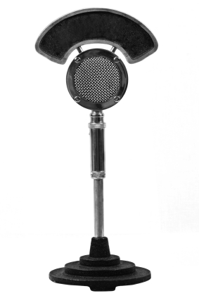

Unbuckled

Unbuckled is a stage. Take your seat and enjoy the show, watch others and get inspired. Be invited to act yourself, play, talk. Inspire others. Motivate yourself.
Follow @unbuckled to stay tuned!
Unbuckled is a stage. Take your seat and enjoy the show, watch others and get inspired. Be invited to act yourself, play, talk. Inspire others. Motivate yourself.
Follow @unbuckled to stay tuned!